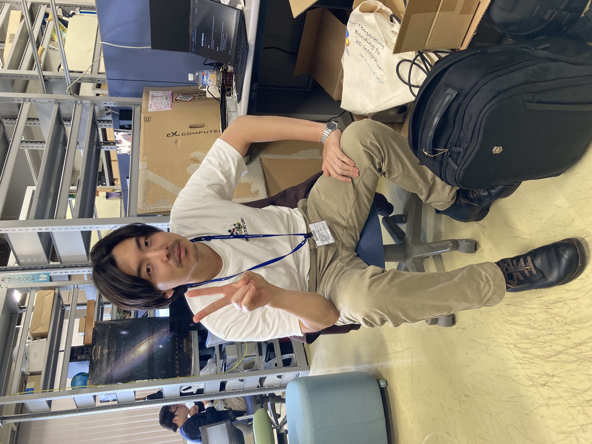

I am a researcher in exoplanet science. I enjoy a comprehensive approach that spans hardware development, observations, and data analysis.
Aerospace Project Research Associate (2024.4 - Present)
Project Research Fellow (2022.4 – 2024.3)
System Engineer (2018.4 – 2019.3)
Department of Earth and Planetary Sciences, (Advisor: Prof. B.Sato)
Ph.D., 2019.4 – 2022.3